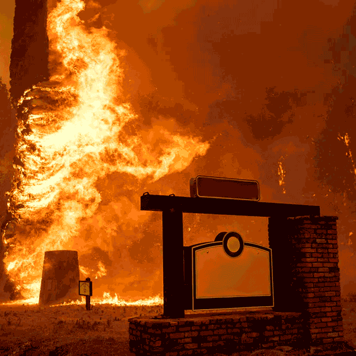

oh god please
don't tell my boss
— the parks staff
what the fuck
🔥 🔙🔥
🔙🔥🔥
🔥🔙
--- enter
[once]I used to go on picnics here.
==> click
--- click
The parks staff can't figure out what is going on here. {a mystery!}
[cont] No one can live in the fire level, and it's growing every year. {bummer}
[cont] Salamanders used to live here.
==> click